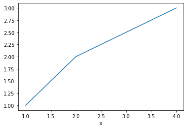

3. nbextension: table of contents (2)¶
Inhaltsverzeichnis
4. css-styling¶
from IPython.core.display import HTML
def css_styling():
styles = open("htwk_style.css", "r").read()
return HTML(styles)
css_styling()
---------------------------------------------------------------------------
FileNotFoundError Traceback (most recent call last)
<ipython-input-1-a35d7583b17b> in <module>
3 styles = open("htwk_style.css", "r").read()
4 return HTML(styles)
----> 5 css_styling()
<ipython-input-1-a35d7583b17b> in css_styling()
1 from IPython.core.display import HTML
2 def css_styling():
----> 3 styles = open("htwk_style.css", "r").read()
4 return HTML(styles)
5 css_styling()
FileNotFoundError: [Errno 2] No such file or directory: 'htwk_style.css'
5. nbextension: excercise1+2¶
AUFGABE
Plotte x=[1,2,3] und y=[2,3,4]
import matplotlib.pyplot as plt
x = [1,2,3]
y = [1,2,3]
plt.plot(x,y)
[<matplotlib.lines.Line2D at 0x1e2bd342790>]
6. %%tutor magic¶
Installation
pip install metakernel
from metakernel import register_ipython_magics
register_ipython_magics()
%%tutor
mylist = []
for i in range(10):
mylist.append(i ** 2)
7. nbextension: Split Cell Notebook¶
import matplotlib.pyplot as plt
x = [1,2,4]
y = [1,2,3]
fig , ax = plt.subplots()
ax.plot(x,y)
ax.set_xlabel("x")
plt.show()

fig , ax = plt.subplots()plot initiierenauf
axplot ausführen
8. ipywidgets¶
aus: https://github.com/kimfetti/Videos/blob/master/Shorts/standard_deviation_widget.ipynb
8.1. Stddev¶
import matplotlib.pyplot as plt
import numpy as np
import scipy.stats as stats
import seaborn as sns
from ipywidgets import interactive, interact
from ipywidgets import FloatSlider
plt.rcParams['font.family'] = 'serif'
def stdev_widget(std_dev = 3):
# Mean
mu = 100
# Bounds for line, +/- 3 standard deviations
x = np.linspace(mu - 3*std_dev, mu + 3*std_dev, 100)
# Random Points
n = 100
pts = np.random.normal(100, std_dev, size=n)
pos = np.abs(np.random.normal(.1, .05, size=n))
# Set up subplots
f, (ax0, ax1) = plt.subplots(2, 1, figsize=(4, 5), gridspec_kw={'height_ratios': [3, 1]})
# DENSITY PLOT
ax0.plot(x, stats.norm.pdf(x, mu, std_dev), lw=3, zorder=3)
ax0.fill_between(x, 0, stats.norm.pdf(x, mu, std_dev), alpha=0.2, zorder=2)
# Add mean line
ax0.axvline(100, ls='--', color='lightgray', zorder=1)
ax0.text(101, 0.35, 'Mean', fontsize=12, color='gray', fontstyle='italic')
# Formating for density plot
ax0.set_xlim(80, 120)
ax0.set_ylim(0, .4)
ax0.set_yticks([0, 0.1, 0.2, 0.3, 0.4])
ax0.set_ylabel('Density', fontsize=12)
sns.despine()
# RANDOM SCATTER POINTS below density plot
ax1.scatter(pts, pos, color='#606060')
# Formating for scatter plot
ax1.axis("off")
ax1.set_xlim(80, 120)
ax1.set_ylim(-0.05, .3)
style = {'description_width': 'initial'}
interact(stdev_widget,
std_dev=FloatSlider(value=3,
min=1,
max=5,
step=0.5,
description='Standard Deviation',
style=style
));
8.2. Interpolation¶
import matplotlib.pyplot as plt
import numpy as np
import scipy.stats as stats
import seaborn as sns
import pandas as pd
from scipy.interpolate import InterpolatedUnivariateSpline
from matplotlib.patches import Circle
from ipywidgets import interactive, interact
from ipywidgets import FloatSlider
from ipywidgets import IntSlider
fu_sim = pd.read_csv("fu.csv")
def extra_interpolation(endpoint = 15,order=1):
fu_sim2 =fu_sim.loc[fu_sim["displacement [mm]"] <= endpoint,:]
x = np.linspace(0, 20, 21)
fig, ax = plt.subplots(figsize=(20/2,15/2))
plt.grid(linewidth=0.25)
ax.set_ylim([0, 15])
ax.set_xlim([0, 20])
ax.set_xlabel("Verschiebung [mm]")
ax.set_ylabel("Kraft [N]")
int_and_extrapolation = InterpolatedUnivariateSpline(fu_sim2["displacement [mm]"], fu_sim2["force [N]"], k=order)
ax.plot(x,int_and_extrapolation(x),label="inter-/extrapolation", marker="s", markersize=3)
ax.plot(fu_sim["displacement [mm]"],fu_sim["force [N]"],label="daten für inter-/extrapolation")
ax.add_patch(Circle((endpoint,int_and_extrapolation(endpoint)), 0.2, alpha=0.5, color="red"));
ax.legend()
style = {'description_width': 'initial'}
interact(extra_interpolation,
endpoint=IntSlider(value=15,
min=1,
max=15,
step=1,
description='Endpunkt',
style=style
),
order=IntSlider(value=1,
min=1,
max=5,
step=1,
description='Order',
style=style
));
---------------------------------------------------------------------------
FileNotFoundError Traceback (most recent call last)
<ipython-input-9-dc13386b0a35> in <module>
11 from ipywidgets import IntSlider
12
---> 13 fu_sim = pd.read_csv("fu.csv")
14
15 def extra_interpolation(endpoint = 15,order=1):
C:\ProgramData\Anaconda3\lib\site-packages\pandas\io\parsers.py in read_csv(filepath_or_buffer, sep, delimiter, header, names, index_col, usecols, squeeze, prefix, mangle_dupe_cols, dtype, engine, converters, true_values, false_values, skipinitialspace, skiprows, skipfooter, nrows, na_values, keep_default_na, na_filter, verbose, skip_blank_lines, parse_dates, infer_datetime_format, keep_date_col, date_parser, dayfirst, cache_dates, iterator, chunksize, compression, thousands, decimal, lineterminator, quotechar, quoting, doublequote, escapechar, comment, encoding, dialect, error_bad_lines, warn_bad_lines, delim_whitespace, low_memory, memory_map, float_precision, storage_options)
608 kwds.update(kwds_defaults)
609
--> 610 return _read(filepath_or_buffer, kwds)
611
612
C:\ProgramData\Anaconda3\lib\site-packages\pandas\io\parsers.py in _read(filepath_or_buffer, kwds)
460
461 # Create the parser.
--> 462 parser = TextFileReader(filepath_or_buffer, **kwds)
463
464 if chunksize or iterator:
C:\ProgramData\Anaconda3\lib\site-packages\pandas\io\parsers.py in __init__(self, f, engine, **kwds)
817 self.options["has_index_names"] = kwds["has_index_names"]
818
--> 819 self._engine = self._make_engine(self.engine)
820
821 def close(self):
C:\ProgramData\Anaconda3\lib\site-packages\pandas\io\parsers.py in _make_engine(self, engine)
1048 )
1049 # error: Too many arguments for "ParserBase"
-> 1050 return mapping[engine](self.f, **self.options) # type: ignore[call-arg]
1051
1052 def _failover_to_python(self):
C:\ProgramData\Anaconda3\lib\site-packages\pandas\io\parsers.py in __init__(self, src, **kwds)
1865
1866 # open handles
-> 1867 self._open_handles(src, kwds)
1868 assert self.handles is not None
1869 for key in ("storage_options", "encoding", "memory_map", "compression"):
C:\ProgramData\Anaconda3\lib\site-packages\pandas\io\parsers.py in _open_handles(self, src, kwds)
1360 Let the readers open IOHanldes after they are done with their potential raises.
1361 """
-> 1362 self.handles = get_handle(
1363 src,
1364 "r",
C:\ProgramData\Anaconda3\lib\site-packages\pandas\io\common.py in get_handle(path_or_buf, mode, encoding, compression, memory_map, is_text, errors, storage_options)
640 errors = "replace"
641 # Encoding
--> 642 handle = open(
643 handle,
644 ioargs.mode,
FileNotFoundError: [Errno 2] No such file or directory: 'fu.csv'
9. gnuplot kernel¶
https://github.com/has2k1/gnuplot_kernel
[ ] zum laufen bringen
# This loads the magics for gnuplot
%load_ext gnuplot_kernel
x=[0,1,2,3]
# inline plots for matplotlib
%matplotlib inline
# This loads the magics for gnuplot
%load_ext gnuplot_kernel
%%gnuplot
plot sin(x)